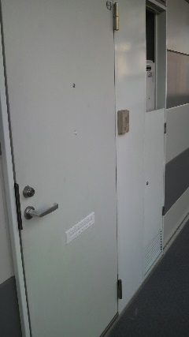
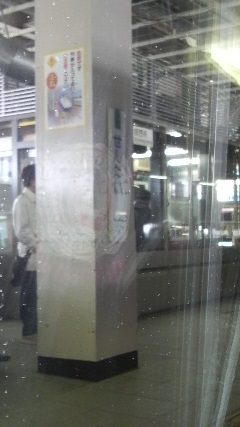
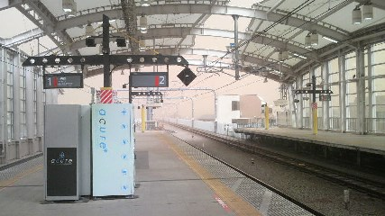
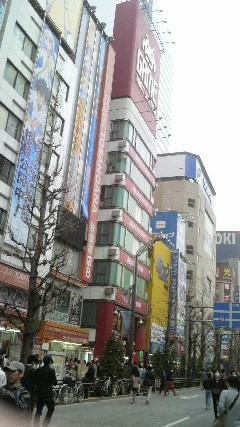

京都・伏見
2013/03/10 - 1日目 東京
どうもおはようございます。
春の息吹感じられる３月中旬、春休みを謳歌している中 前々から計画していた京都旅行へと行ってきました。
今回の目的は修学旅行で京都を訪れた時に時間の都合上まわれなかった伏見稲荷大社への参拝が主目的です。
そのほかにも京都周辺の神社仏閣巡りも視野に入れて行ってきました。
自分は仏教の知識等はからっきしなく(そもそも理系)その場の雰囲気を楽しむことしかできません。
自分が好きな「東方Project」に出てくる元ネタとして巡ってくるいわゆる"聖地巡礼"的な意味合いが強かったです。
なんにせよ、この旅行はよい経験になりました。
それでは駄文ですが書き綴っていこうと思います。
最後までおつきあいする必要は必ずしもありません。
それでは出発

at 仙台の自宅ドア(なんでこんなもん撮ったんだろう・・・)
7時半行動開始、自宅から仙台駅までバスで20分。
3/10この日の予定は京都までの中継地点として東京に住む友人宅へ行くこと。
友人（T君）は前日までバイト夜勤だったそうな、昼から押しかけてスマンのう・・・
そして駅前で朝食をとった後、仙台駅から新幹線で東京へ

見づらいけど仙台駅にて、時刻は朝9時過ぎ
仙台から東京までは1時間半ぐらいかかります。（東京駅の写真撮り忘れた;）
その後中央線にて友人宅の最寄り駅へ。
2駅前で連絡入れろって言ってたけど・・・ま、連絡しとくか->待ち合わせピッタリΣ( ﾟДﾟ)
友人曰く「自分家と駅までの時間はかると2駅前まできたときに家でればちょうどに着く」だそうな。
時間もお昼時だったので1回友人宅に荷物を置いたあと外で食べることに。
油そばという汁なしラーメンをいただきました。うまうま。（またも写真撮り忘れ）
もうラーメンは汁なしで具も無くていいんじゃないかな←
今日の目的である「友人と合流」は果たしたので夜まで秋葉原でも行くかとのことに。
ほんとは大田区の方で東方のイベントがあったんだけど時間的につくころには終了30分前になるようだったので断念。
電車乗る時にこんな景色が

花粉や黄砂やPM2.5で霞んでる・・・
・・・おのれ中国
電車を乗り継ぎ秋葉原へ、日曜日だったため歩行者天国でした。復活してたのね。
ふらふらと二人して同人ショップ巡り、数年前はオタであることを断固として認めなかった友人も、
周囲の影響からかすっかりそまっててだいぶそっちの話も弾んで楽しかったです。
かなり大きな声で喋ってたような気がする。周囲の方と店員さんゴメンナサイ

秋葉のメ□ブは見つけにくいし狭すぎると思う
ガンダムカフェでガンプラ焼き(たいやきの亜種)を食したりして一通り秋葉を堪能したあと、
また電車を乗り継ぎ友人宅へ。Suicaって便利よね〜
夕飯どうしようかと相談したら 友人「たこ焼き器があるぜｂ」とのことでたこやきになりました。
材料を買ってきてひっくり返したりしながらたこ焼き食べ食べ。機械さえあれば意外と簡単にできるのね。
（←ほとんど作るのは友人にまかせっぱなしで食べてばっかいた奴）
その後は俺が持って行ったノートPCでアニメ鑑賞会。
一人で見るのより楽しいね〜
そうしてこの日は終了、ロフトの布団をかりて就寝。
この時点で翌日の予定を確認したらかなり余裕があったので特に早起きする必要はないにしろ、
習慣づけた時間通り23時寝-5時起きをすることに。
それと奇しくも友人が京都旅行マップを持っていたので断って拝借。
つい先日行ってきたばかりらしい。タイミングが良すぎるだろｊｋ
ここで一人旅と一人旅行の違いについて説明しておくと、
一人旅は一人でその場に行き、特に計画は立てずにその場その場で行動するもの。
一人旅行は計画を立てて一人で行くこと、らしいです。
その点で見ると俺のは旅行、友人のは旅だったようです。
でもある程度計画立てておかないとしっかり行動できないんだよなー
それと何故友人宅に布団が2枚あったのか地味に謎なんだが・・・
結構頻繁に別の友人を泊めてるようなこと言ってたから設備があるんかな？
もろもろの謎を残しつつ(?)楽しく過ごせましたとさ。
ありがとう友人T
2日目 伏見編へ続く